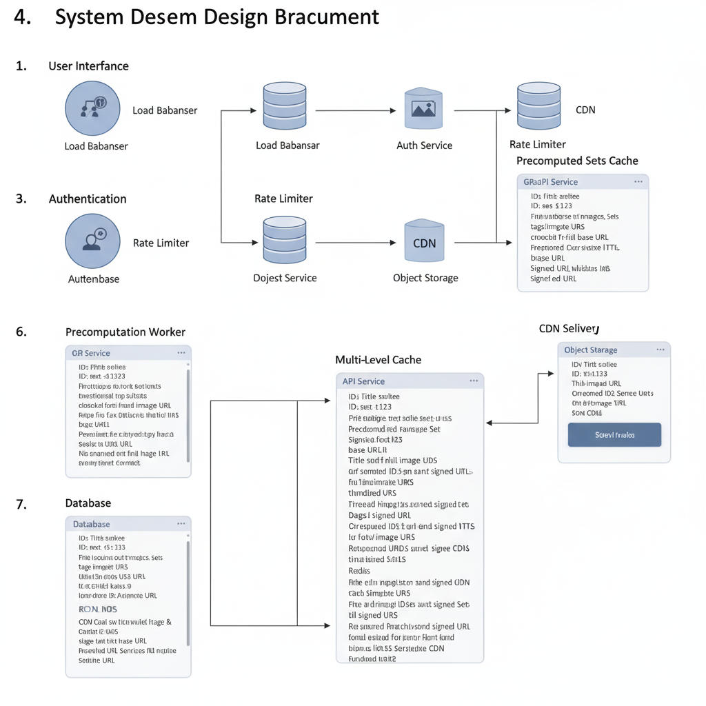

Image Share System (200 Images)
Yes, please redesign the pipeline diagram to reflect the "1% industry" approach with all optimizations, clearly showing the caching, precomputing, and security flows. Also, provide a detailed system design document for this updated architecture.
Here's the updated diagram reflecting the "1% industry" approach:

I've redesigned the diagram and prepared a comprehensive system design document based on the "1% industry" approach.
Interview Answer — How Do You Serve 200 Random Images per Request at Scale?
This design serves a list of 200 randomly chosen images to millions of users with sub-100 ms response times by precomputing the random selections offline instead of computing them per request. A background precomputation worker repeatedly picks random sets of 200 image IDs from the metadata database (RDS), attaches a signed URL for each image, and stores each finished set as one JSON value in Redis. The API then only has to fetch one ready-made set from the cache and return it; the images themselves are downloaded by the client directly from the CDN, backed by S3.
Precomputation exists because the naive approach does not scale. The cause → effect chain of computing randomness per request is: every request runs a random-sampling query (such as ORDER BY RANDOM() LIMIT 200) over the whole image table → that query scans or sorts a large table each time → at millions of requests the database becomes the bottleneck, and generating 200 signed URLs per request adds cryptographic work on the hot path. Moving both jobs to the worker turns each request into a single cache read.
The rest of the architecture protects that fast path: an edge load balancer, a rate limiter backed by Redis, and an auth service in front; a GraphQL API with a circuit breaker around the cache and database; multi-level caching (CDN for image bytes, Redis for precomputed sets and per-image metadata); and a fallback that computes a set in real time on the rare cache miss (see the request data flow).
"Picking 200 random images from the database on every request doesn't scale, so I precompute. A background worker builds many random sets of 200 image IDs, with signed CDN URLs already generated, and stores each set as one JSON value in Redis with a short TTL. A request just goes through the load balancer, rate limiter, and auth, reads one precomputed set from Redis, and returns it; the client then downloads the images directly from the CDN, which is backed by S3. Metadata lives in RDS, image bytes in S3, and a real-time fallback plus a circuit breaker handle cache misses and failures."
One important interview follow-up
Q: If users are served precomputed sets, is the result still random for each user?
A: Only as random as the pool of sets. With a few hundred precomputed sets rotated by a counter or time key, many users receive the same set, and a user who refreshes can see a repeat — acceptable for a "discover" feed, not for something like a raffle. Randomness improves with more sets, shorter TTLs, and cheap per-request variation such as shuffling the order or combining two sets. Signed URLs add another constraint: a set cached for 10 minutes must contain URLs that stay valid longer than that, or clients will get expired links, so URL expiry must exceed the cache TTL plus expected client use.
System Design Document: Scalable Image Service with Precomputed Randomization
1. Introduction
This document outlines the design of a highly scalable and performant image service capable of returning 200 "random" images per request to millions of daily users. The design prioritizes low latency, cost-effectiveness, high randomness quality, robust security, and manageable operational complexity. It leverages industry best practices including multi-level caching, precomputation, and secure content delivery.
2. Goals & Requirements
- Latency: Sub-100ms response time for image requests.
- Cost: Minimize infrastructure costs while meeting performance targets.
- Randomness Quality: Provide a diverse and truly random selection of images per request.
- Security: Protect image assets and user data; prevent unauthorized access and abuse.
- Operational Complexity: Maintain a system that is easy to monitor, maintain, and scale.
- Scale: Support millions of users and billions of image requests daily.
- Reliability: High availability and fault tolerance.
3. Architecture Overview
The system employs a multi-tiered architecture with a strong emphasis on caching and precomputation to offload real-time database lookups and expensive random selections. Signed URLs ensure secure and efficient content delivery via CDN.

4. Component Breakdown
4.1. User Interface & Edge
- User: Initiates requests from client devices (web, mobile).
- Load Balancer (Edge): Distributes incoming traffic across Frontend instances. Provides DDoS protection and SSL termination.
4.2. Request Processing & Security
- Frontend (API Gateway / BFF):
- Acts as the entry point for user requests.
- Responsible for initial request validation and routing.
- Can perform lightweight pre-processing or aggregation.
- Rate Limiter:
- Protects backend services from abuse and ensures fair usage.
- Applies limits per user, IP address, or API key.
- Implemented using distributed caches like Redis.
- Auth Service:
- Authenticates and authorizes user requests.
- Validates user tokens (e.g., JWT).
- Communicates with User Database (via RDS) for user information.
- Enforces access control policies.
4.3. API Service (GraphQL Endpoint)
- This is the core business logic layer.
- GraphQL Endpoint:
- Provides a flexible API for clients to request specific image metadata.
- Handles batch fetching and avoids N+1 query problems.
- Fetches image metadata (ID, title, tags, thumbnail URL, signed URL) from the Multi-Level Cache or, as a fallback, from the RDS.
- Generates or retrieves Signed URLs for direct image access from the CDN.
- Applies a Circuit Breaker pattern to protect against cascading failures of downstream services (e.g., Cache, RDS).
4.4. Multi-Level Caching Strategy
Caching is paramount for low latency and reduced database load.
- Redis/Memcached (Primary Cache for Precomputed Sets):
- Stores precomputed lists of 200 image IDs and their associated metadata (including pre-generated Signed URLs).
- Key: a combination of "random set ID" or a time-based key.
- Value: A JSON array of image objects.
- TTL (Time-To-Live): Configured to ensure freshness while avoiding frequent regeneration. A short TTL (e.g., 5-10 minutes) for random sets helps maintain randomness quality over time.
- Metadata Cache (Redis/Memcached):
- Caches individual image metadata (ID, title, tags, base S3 URL, current Signed URL).
- Reduces load on the database for frequently requested individual image details.
- TTL can be longer here, as individual image metadata changes less frequently.
- CDN (Content Delivery Network):
- Serves the actual image files.
- Caches images at edge locations globally, drastically reducing latency for users.
- Leverages Signed URLs to ensure only authorized requests can access content directly from S3 via the CDN.
4.5. Data Storage
- Object Storage (S3):
- Stores the raw, high-resolution image files.
- Highly scalable, durable, and cost-effective.
- Access is secured via IAM policies and Signed URLs.
- RDS (Relational Database Service):
- Stores image metadata:
Image ID(Primary Key)TitleDescriptionTags(indexed for search/filtering, if needed)S3_Path(path to the image in object storage)Upload_TimestampStatus(e.g., active, moderated, etc.)
- Stores user information and authentication data.
- Optimized with indexes to support efficient queries for the Precomputation Worker.
- Stores image metadata:
4.6. Precomputation Worker
- Offline Process: This dedicated service runs continuously or on a schedule.
- Function:
- Queries the RDS for a large pool of image IDs and their metadata (e.g.,
S3_Path). - Generates truly random combinations of 200 image IDs.
- For each image ID in the random set, it generates a Signed URL for direct CDN access (with an appropriate expiration time).
- Stores these complete JSON objects (containing 200 image details with their Signed URLs) into the Precomputed Sets Cache (Redis).
- Periodically refreshes these random sets based on TTLs or a scheduled job.
- Queries the RDS for a large pool of image IDs and their metadata (e.g.,
- Benefits:
- Ensures high randomness quality.
- Moves expensive random selection logic off the critical request path.
- Pre-generates Signed URLs, eliminating real-time cryptographic operations during user requests.
4.7. Signed URL Service / Token Validator
- This internal service is responsible for generating and validating Signed URLs.
- It interacts with AWS S3/CloudFront to create time-limited, access-controlled URLs for accessing content via the CDN.
- The Precomputation Worker and the API Service (for cache misses or specific requests) use this service.
5. Data Flow for a "Get 200 Random Images" Request
- User Request: User's device sends a request to the Frontend via the Edge Load Balancer.
- Rate Limiting: The request passes through the Rate Limiter.
- Authentication: Frontend forwards the request to the Auth Service to validate the user's token.
- API Service: If authenticated, the request reaches the API Service (GraphQL Endpoint).
- Cache Check (Precomputed Sets):
- The API Service first attempts to retrieve a precomputed random set from the Redis Precomputed Sets Cache.
- It uses a key (e.g., a simple counter that rotates, or a time-based key) to fetch one of the available random sets.
- Cache Hit: If a set is found in the cache (containing 200 image metadata objects with valid Signed URLs), the API Service immediately returns this JSON array to the Frontend.
- Cache Miss (Fallback - Rare for Random Sets):
- If a precomputed set is not found (e.g., cache expired, worker failed), the API Service would fall back.
- It would query the RDS for a pool of image IDs, perform a real-time random selection, generate Signed URLs via the Signed URL Service, store this new set in cache, and then return it. This scenario is designed to be rare.
- Frontend Response: The Frontend receives the image data from the API Service and sends it back to the user.
- Image Loading (Client Side): The user's client-side application receives the JSON array of image metadata (including Signed URLs). It then directly fetches the images from the CDN using these Signed URLs.
- CDN Delivery: The CDN serves the image files from its edge caches. If an image is not in the CDN cache, it fetches it from S3.
6. Key Optimizations & "1% Industry Thinking"
- Precomputed Random Sets: The most significant optimization. By generating random lists of images (with pre-signed URLs) offline and storing them in a fast cache (Redis), the system avoids real-time heavy computation and database lookups during user requests. This guarantees low latency at scale for random selection.
- Signed URLs: Essential for security and efficiency. They provide temporary, authorized access to images directly from the CDN/S3, offloading the API service from acting as an image proxy. This also allows granular control over access and expiration.
- Multi-Level Caching: CDN for static assets, Redis for precomputed lists and metadata. This tiered approach maximizes cache hit ratios and minimizes latency.
- Separation of Concerns: Image metadata in RDS, actual images in S3. This allows independent scaling and optimization of database and storage.
- GraphQL for Metadata: Provides flexibility and efficiency in fetching precisely what the client needs, avoiding over-fetching. Batching capabilities reduce network calls.
- Offline Processes: The Precomputation Worker ensures expensive tasks are done asynchronously, not on the critical path of user requests.
- Rate Limiting & Authentication: Robust security measures prevent abuse and ensure only authorized users access content.
- Circuit Breakers: Enhance system resilience by gracefully handling failures in downstream services, preventing cascading outages.
7. Monitoring & Operations
- Cache Hit/Miss Ratio: Critical metric for caching effectiveness.
- Latency: End-to-end latency, per-service latency (Auth, API, Cache).
- CDN Performance: Latency, error rates, cache hit ratio at the CDN level.
- Database Load: CPU, I/O, connection count for RDS.
- Worker Status: Health and completion rates of the Precomputation Worker.
- Error Rates: Across all services (API, Auth, etc.).
- Alerting: Proactive alerts for performance degradation, errors, and security events.
- Distributed Tracing: To understand the flow of requests and pinpoint bottlenecks.
8. Future Enhancements
- Personalized Randomness: Incorporate user preferences or content categories into the precomputation logic.
- Image Moderation Pipeline: Integrate an automated and/or manual moderation system to ensure content quality and safety.
- Advanced Search & Filtering: If required, enhance RDS with more sophisticated indexing (e.g., Elasticsearch) for complex search queries beyond random selection.
- Dynamic Image Resizing/Optimization: Services like AWS Lambda@Edge or dedicated image processing services to serve optimized image sizes on the fly.
- A/B Testing Framework: For experimenting with different randomization algorithms or features.